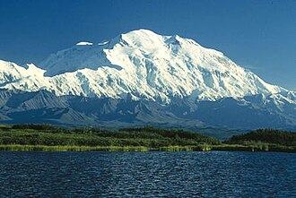

Planine su jedan od najljepših prirodnih krajolika, a svojim stijenama, šumama i jezerima privlače planinare iz cijelog svijeta.
Hrvatska ima brojne planine, poput Velebita, Biokova i Medvednice, koje nude prekrasne poglede i markirane staze.
